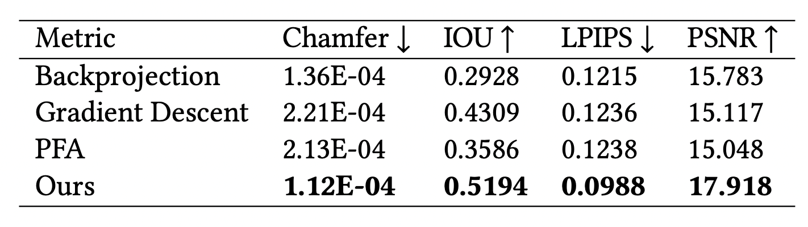
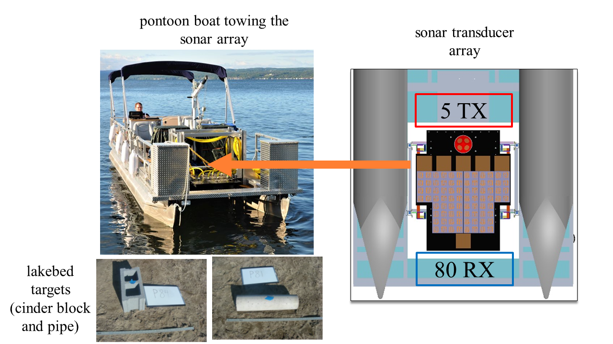

Abstract
Synthetic aperture sonar (SAS) measures a scene from multiple views in order to increase the resolution of reconstructed imagery. Image reconstruction methods for SAS coherently combine measurements to focus acoustic energy onto the scene. However, image formation is typically under-constrained due to a limited number of measurements and bandlimited hardware, which limits the capabilities of existing reconstruction methods. To help meet these challenges, we design an analysis-by-synthesis optimization that leverages recent advances in neural rendering to perform coherent SAS imaging. Our optimization enables us to incorporate physics-based constraints and scene priors into the image formation process. We validate our method on simulation and experimental results captured in both air and water. We demonstrate both quantitatively and qualitatively that our method typically produces superior reconstructions than existing approaches. We share code and data for reproducibility.
5 Minute Video Overview
Method
SAS reconstruction typically uses backprojection where measurements are coherently combined onto the scene using the time-of-flight between the sonar and scene. Instead, we propose an analysis-by-synthesis optimization for reconstruction, enabling us to incorporate physics-based knowledge and prior information into image formation. Our pipeline adapts techniques from volume rendering and neural fields to create a general SAS reconstruction method that outperforms backprojection.

In particular, we propose:
(1) Pulse deconvolution: An analysis-by-synthesis method for deconvolving the transmitted pulse from measurements and increasing our system bandwidth computationally.
(2) Neural backprojection: A general SAS reconstruction method formulated as an analysis-by-synthesis optimization. Neural backprojection
uses a neural network to estimate the scene and designs a forward model that considers Lambertian scattering, occlusion, and the coherent integration of acoustic waves to render measurements.
Results
We validate our method in simulation and on two real data sources, AirSAS and the Search Volume Sediment Sonar (SVSS)
Simulation Results
We simulate sonar measurements using a time-of-flight renderer modified from Kim et al. (2021). In particular, we use the renderer to obtain the transient impulse response of a scene and convolve the transient with the sonar pulse to obtain sonar measurements.
Backprojection
Gradient-Descent Ours Ground-Truth
We compare our method to backprojection, gradient descent, and the polar formatting algorithm (PFA not shown here). Backprojection is the traditional method for reconstruction and gradient descent is our method without using a neural network to predict the scene.
We compute metrics across many simulated scenes to characterize the performance gap.
Real Results 1: AirSAS
AirSAS is a speaker and microphone directed at a turntable. The speaker and microphone are mounted to a linear track to enable cylindrical and helical collection geometries.

Here, we show armadillo reconstructions of AirSAS measurements using backprojection and our proposed method, neural backprojection. Neural backprojection better captures the object geometry and details while mitigating streaking artifacts that plague backprojection. Please see the video/paper for more results.
Backprojection (Traditional)
Proposed Method
Real Results 2: Search Volume Sediment Sonar (SVSS)
SVSS uses a sonar transducer array mounted to a pontoon boat to search for objects in a lakebed.
Cinder block cores up
Cinder block face up
Pipe
The top row shows backprojection reconstructions and the bottom row shows ours. Our pulse deconvolution and neural backprojection steps enable us to reconstruct sharper target features and mitigate the blobby features of backprojection.